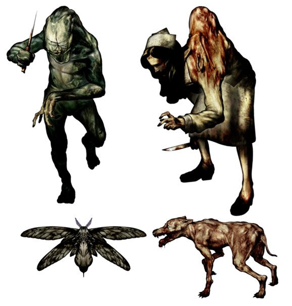

Silent Hill
The game follows Harry Mason as he searches for his missing adopted daughter in the eponymous fictional American town of Silent Hill. Stumbling upon a cult conducting a rite to revive a deity it worships, he discovers her true origin. Five game endings are possible, depending on the actions taken by the player, including one joke ending.

Harry confronts monsters in each area using both melee weapons and firearms. Being an ordinary man, Harry cannot sustain many blows from enemies and gasps for breath after sprinting. His inexperience with firearms means that his aim, and therefore the player's targeting of enemies, is often unsteady. A portable radio collected early in the game alerts Harry to the presence of nearby creatures with bursts of static, although players can choose to turn off the radio if they prefer.
The player's objective is to guide the main protagonist and player character, Harry Mason, through a monster-filled town as he searches for his lost daughter, Cheryl. Silent Hill's gameplay consists of combat, exploration, and puzzle-solving. The game uses a third-person view, with the camera occasionally switching to other angles for dramatic effect in pre-scripted areas. This approach differs from older survival horror games, which frequently shifted through various camera angles using pre-rendered backgrounds. Since Silent Hill has no heads-up display, the player must consult a separate menu to check Harry's "health" in similar traits of early Resident Evil titles.

The player is encouraged to locate and collect maps of each area as soon as possible. These maps, stylistically similar to tourist maps, make navigating the game world easier. Accessible from the menu and readable only when sufficient light is present, each map is marked with places of interest. Visibility is mostly low due to fog and darkness; the latter is prevalent in the "Otherworld".[8] The player finds a flashlight early in the game, which illuminates only a short distance. Like the radio, the player can choose to turn off the flashlight, making the game darker but causing monsters to have a more difficult time finding the player. Navigating through Silent Hill requires the player to find keys and solve puzzles.

Silent Hill received positive reviews from critics upon its release and was commercially successful. It is considered by many to be one of the greatest video games ever made, as well as a defining title in the survival horror genre, moving away from B movie horror elements toward a more psychological horror style, emphasizing atmosphere.Various adaptations of Silent Hill have been released, including a 2001 visual novel, the 2006 feature film Silent Hill, and a 2009 reimagining of the game titled Silent Hill: Shattered Memories. The game was followed by Silent Hill 2 in 2001 and a direct sequel, Silent Hill 3, in 2003